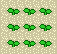
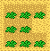

PLANTAÇÕES
Cada estação Nina venderá sementes diferentes para você plantar. No primeiro dia da nova estação, siga para sua loja e veja o que ela tem. Na Maioria das vezes ela terá 2 tipos diferentes de sementes que você pode comprar exceto no Inverno.
A semente de Grama não está disponivel nesta estação. Também depende de como você nomea seu fazendeiro (Veja sementes de Inverno) você terá uma ou duas sementes para comprar.
Cada saco de semente cobre uma área de quadrado de 3x3. Para plantar sementes você primeiro tem que arar o solo com sua enxada, depois equipe suas sementes e aperte o botão "A".
Seu fazendeiro jogará as sementes no ar e elas ficarão no solo arado. Se as sementes não ficarem no chão no solo arado elas não brotarão. Isso inclue solo não arado, então certifique-se de quipar suas sementes só quando você estiver pronto para plantar e não quando você está tentando ordenhar sua vaca.
Você acabará perdendo seus sacos de sementes.

Apenas por que você pode plantar uma area de quadrado 3x3 com um saco de semente não quer dizer que é uma boa ideia. Um quadrado 3x3 de plantas é fácil para regar com um borrifador quando elas são semeadas, mas quando elas começam a crescer você não pode passar por cima delas mais. Você pode regar muitas plantas, você tem que caminhar de cada lado de um quadrado e rega-las toda vez.
Mesmo que você ainda depois não puder regar a do meio!

Para ter uma semente no meio, você pode deixar um espaço não arado assim as sementes não chegarão no chão. Depois você pode caminhar no meio e rega-las. Você também pode regar a seção intocável da plantação por que o borrifador não alcançará tão longe.
É melhor do que preencher 3x3 de plantação desde que as sementes precisam de um borrifador duas vezes para ter todo solo regado.
Este estilo é bom para usar. Você termina perdendo dois pedaços de uma plantação, mas você leva menos tempo para usar o Borrifador. Ao invés de ter que regar de cima e então regar a do meio, você apenas tem que correr e usar o Borrifador para regar todas elas de uma vez. junto com 3x3 você pode plantar também em linhas, mas você perderá três quadrados de plantação para sua caminhada.
Realmente depende de você como você quer colocar sua plantação no campo. Mesmo se você decidir que não gosta do design, você pode reachatar o solo arado jogando rochas ou pedaços de madeiras em cima deles. Você pode também usar uma rocha para esmagar sementes que você plantou, mas quando elas crescem você tem que usar a foice para destroir suas plantas.
Primavera
| 120G >> | 5 dias >> | Nabos >> | 60G |
| 150G >> | 7 dias >> | Batata >> | 80G |
Verão
| 200G >> | 9 dias >> | Tomate >> | 120G >> | Cresce novamente em 2 dias |
| 300G >> | 9 dias >> | Milho >> | 150G >> | Cresce novamente em 5 dias |
Outono
| 150G >> | 5 dias >> | Berinjela >> | 60G |
| 200G >> | 7 dias >> |  Amendoim >> Amendoim >> |
80G |
Inverno
| 300G >> | 7 dias >> | Cenoura >> | 150G | |
| 500G >> | 9 dias >> |  Brócolis >> Brócolis >> |
250G >> | Cresce novamente em 2 dias |